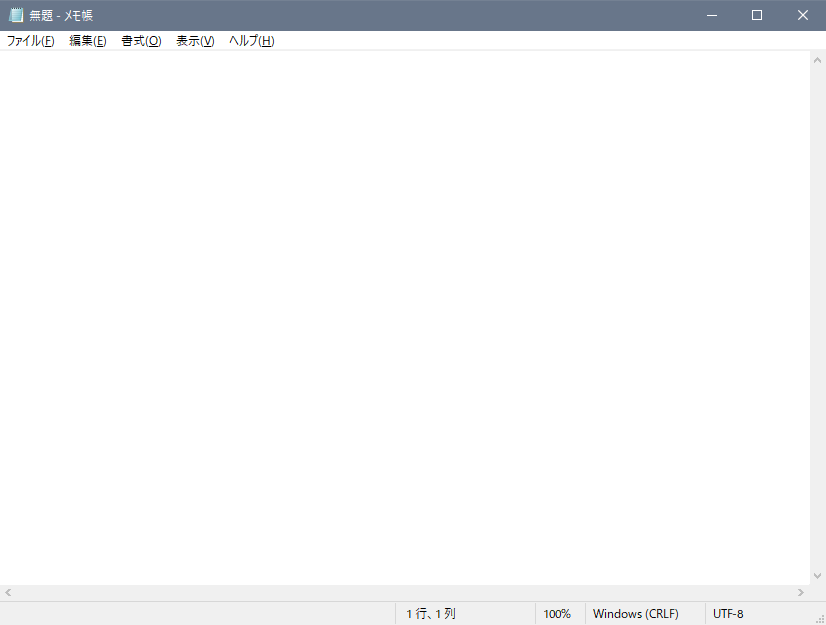
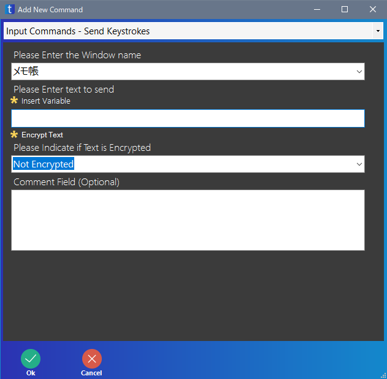
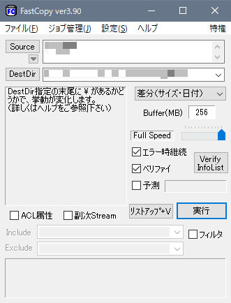

無料で使える RPA の taskt の使い方を紹介しています
taskt の命令で、ソフト・画面の名前を指定する Send Keystrokes 命令、Active Window 命令、UI Automation 命令は、ソフト・画面の名前を解釈する方法が異なります。
Send Keystrokes 命令や、Activate Window 命令は、ソフト・画面名の一部だけを指定しても OK です。
一方、UI Automation 命令は、ソフト・画面名を正確に指定しないとダメです。
補足ですが、これ以降の説明は該当するソフト・画面がパソコン上に 1 つしか存在しないという前提です。例えば「無題 - メモ帳」が複数存在した場合は動作が異なる可能性があります。

たとえば、上のメモ帳ならば、ソフト・画面名の指定は「無題 - メモ帳」と指定すれば OK です。
また、ソフト・画面名の一部が含まれていれば良いので、「メモ帳」や「無題」なども OK です。

ただし、「メモ長」など、ソフト・画面に含まれていない文字が入っていると、エラーになります。
また、ソフト・画面名の大文字小文字は区別します。

例えば、上の画像の FastCopy ならば、「FastCopy」や「Copy」などと指定すれば OK です。
しかし、下の例のように「fastcopy」と大文字・小文字を正確に入力していないとエラーになります。
特に、Send Keystrokes 命令と UI Automation 命令はどちらも Input Commands にある命令なので、同じように使えると思いがちですが、間違えないように注意してください。
また、未検証ですがおそらく下ような命令も同じ系統になると思います。